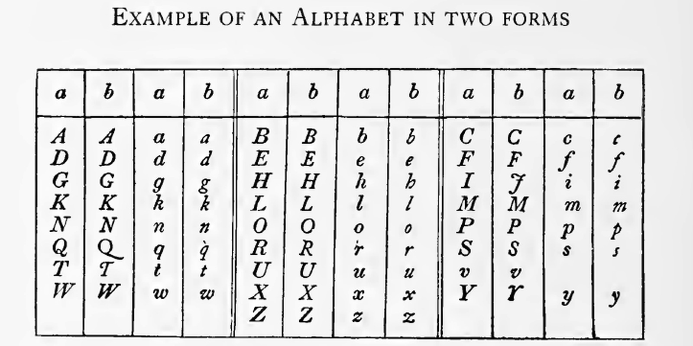
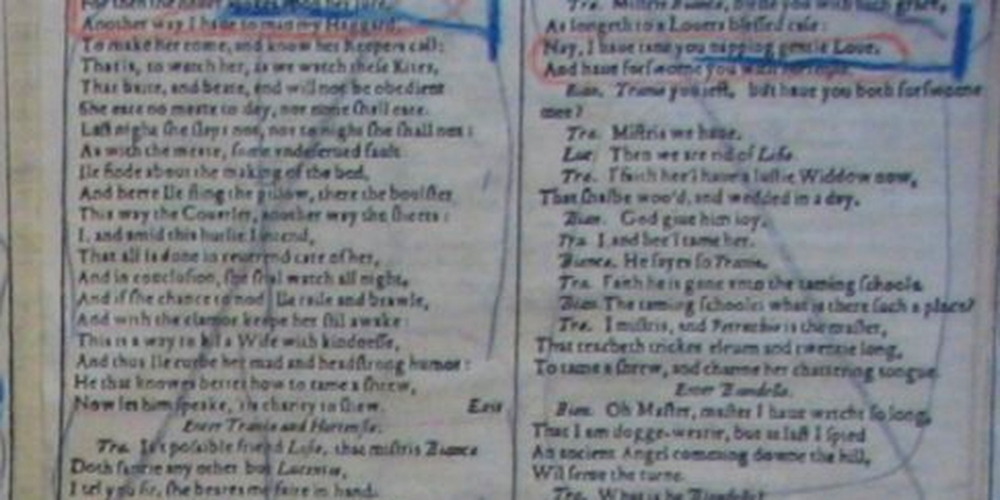
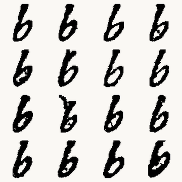
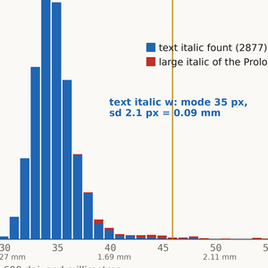
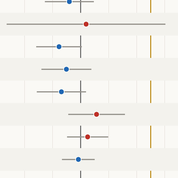
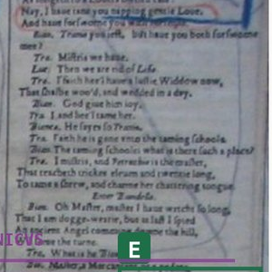
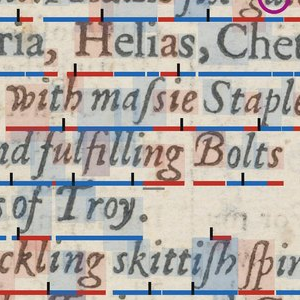

A daily record of progress on the Baconian ciphers. Each issue is one day's work, presented three ways: a public FAQ, a reference column of every source used, and an unrestrained technical colophon.
The signature content
Each entry is one creation, with its year, and what it drives today. An accomplishment with no living consequence is not on these lists.
Where this rests. The second list is built on this project’s premise — that Bacon was the primary author of the 1623 Folio. The One-Day Reports below do not assume it. They test it, and publish the result either way.


Newest first. Issues are superseded, never removed — a link sent today still resolves next year.





Part of New Gorhambury — the sources, the experiments, and the Word Cipher work.